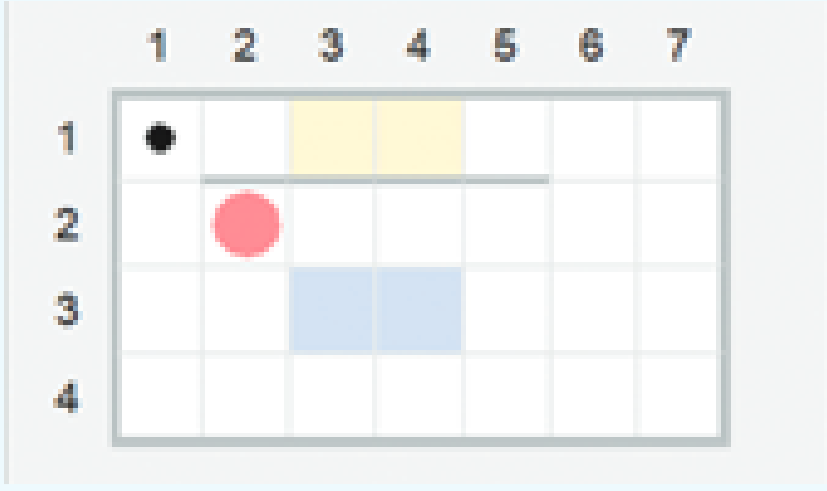

Среда исполнителя Робот

В среде программирования Python, кроме исполнителя Черепашка, можно подключить исполнителя Робот.
Средой обитания исполнителя Робот является прямоугольное клетчатое поле. Между некоторыми клетками, а
также по периметру поля находятся стены.
Серое кольцо обозначает начальное положение Робота, чёрная точка — конечное. Робот может передвигаться
по полю и закрашивать указанные клетки. В заданиях из встроенного задачника Робота закрашенные клетки
помечены
серо-голубым цветом, те клетки, которые Робот должен закрасить, — светло-жёлтым
Для подключения исполнителя Робот в программе прописывается команда from pyrob.api import*.
Готовые задания с обстановками для Робота хранятся в задачнике и вызываются командой @task.

Для изучения данной среды можно использовать альтернативные интернет сервисы повторяющие структуру и систему команд Робота: 1 и 2
Команды при наборе можно выбирать из выпадающего списка. Для этого достаточно набрать
первые буквы команды и нажать Ctrl + пробел
Робот может становиться на обычную и на закрашенную клетку, но не может переместиться с клетки на
клетку, если междуними стена. Робот не может переместиться за границы поля. Эти действия вызывают
ошибку. Робот может
закрасить уже закрашенную клетку. Такое действие ошибку не вызывает. Если задача решена верно, кольцо, изображающее Робота,
окрашиваеся в зелёный цвет.
Рассмотрим пример решения программы prim_12_1
| Поле: | Код: |
|
 |
from pyrob.api import *
|
Упражнения

Будет позже
Будет позже
Будет позже
Будет позже
Будет позже